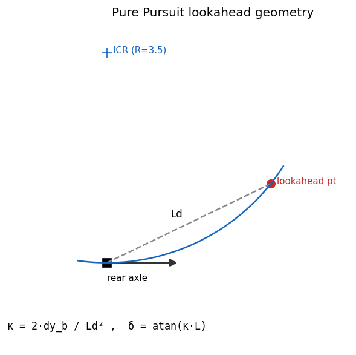

09. Lc7-PathCurvature (Pure Pursuit) / Lc8-Waypoint¶
Learning objectives¶
이 chapter 를 마치면 다음을 할 수 있다.
- Pure Pursuit 의 lookahead geometry 로부터 steer (curvature) 를 유도한다.
- lookahead distance \(L_d\) 의 vx-dependent scheduling 의 이유 (low-vx 진동, high-vx 부드러움) 를 설명한다.
- Pure Pursuit 의 강점/약점 (simplicity vs straight cross-track 잔여) 을 인지하고 Stanley/MPC 대안과 비교한다.
- waypoint path 표현 (arc-length parameterization, frame 선택) 의 의미를 설명한다.
Prerequisites¶
- Chapter 04 — kinematic bicycle (\(\kappa = \tan\delta / L\)).
- Chapter 07-08 — control 사다리, Lc7/Lc8 의 위치, longitudinal cascade.
- Chapter 01 — world ↔ body frame 변환.
9.1 동기 — geometry 기반 steering¶
차량이 \((x, y, \psi)\), path 가 waypoint sequence \(\{(x_i, y_i)\}\) 일 때 Pure Pursuit 는:
- 차량에서 path 위 한 점 (lookahead point, distance \(L_d\)) 을 정한다.
- 그 점을 통과하는 원호 (rear axle 의 instantaneous center 통과) 가 되도록 front wheel steer 를 결정한다.
geometry 가 모든 것을 결정 — feedback 도 optimization 도 없다. 단순함이 강점.

9.2 가정¶
| 가정 | 의미 | 깨지는 case |
|---|---|---|
| Kinematic bicycle | \(\kappa = \tan\delta/L\) | 고속 dynamic slip |
| World frame path | path 가 ENU world 좌표 | Frenet (s,d) frame |
| Dense waypoints | lookahead index 선형 탐색 | sparse / cusp path |
| Geometry-only lateral | cross-track 직접 측정 없음 | straight 잔여 error |
9.3 Geometry 유도¶
lookahead point 를 body frame 으로 변환 (\(R(-\psi)\)):
\(dx_b\) = forward distance, \(dy_b\) = lateral offset (좌가 \(+\)). rear axle (body origin) 과 lookahead point 를 동시에 통과하는 원의 반지름:
kinematic bicycle 에서 steer:
9.4 Lookahead distance scheduling¶
constant \(L_d\) 의 문제: 너무 작으면 작은 lateral error 에 큰 steer → 진동 (정지 근처), 너무 크면 corner 를 일찍 cut → 부드럽지만 부정확.
scheduling:
low vx → \(L_{d,\min}\) (default 1.5 m, 진동 방지). high vx → \(k v_x\) (default \(k=0.40\) s, "0.4 초 후 위치" 예측, 시야 확장).
lookahead index 는 직전 index 부터 선형 탐색 (O(1) amortized); \(L_d\) 도달 실패 시 path 끝점 사용.
9.5 강점 / 약점¶
강점:
- Simple — lateral offset 한 점으로 steer 결정 (식 3 줄).
- Stable — saturation 에도 발진 없음 (geometry 기반).
- No tuning — \(L_d\) 하나만.
- Real-time — O(1).
약점:
- straight 에서 cross-track error 가 0 으로 수렴하지 않음 (heading 만 맞추고 lateral offset 은 lookahead 시야만큼 잔여).
- sharp turn 에서 corner 안쪽으로 cut.
- optimal 아님 — 차량 한계 활용 못 함.
이 약점이 MPC / SMPC 의 출발점 — receding-horizon optimization 으로 cross-track 0 수렴 + corner 한계 활용.
9.6 Stanley 와 비교¶
| 항목 | Pure Pursuit | Stanley |
|---|---|---|
| 기준점 | rear axle | front axle |
| Cross-track | lookahead 의존 | 직접 minimize (\(k_e\,\text{cte}/v_x\)) |
| Heading | indirect | 직접 minimize |
| 진동 | low | high-gain 시 진동 |
| 대표 사용 | Roborace, FSK | DARPA 2005 우승 |
9.7 Lc8-Waypoint 표현¶
PathPoint = (s: arc length, xy: world coord, yaw: tangent, kappa: curvature,
v_des: desired speed). s 가 arc length 면 미분 quantity (yaw, kappa, v_des)
가 자연 정의되고, 미리 계산된 kappa 는 sanity check / feed-forward 로 활용
가능하다.
Frame 선택¶
path 가 어느 frame 인가가 중요하다. world (ENU), vehicle-relative, Frenet (s, d) 가 가능하며 현재는 world frame 만 지원. highway driving 표준은 Frenet.
9.8 검증 전략¶
| 검증 | 케이스 |
|---|---|
| Straight | x-axis 직선 → steer ≈ 0 |
| Left circle | R=20 원호 → steer>0, κ>0 |
| Saturation | tight (R=1) → |steer|≤max_steer |
| End-to-end | figure-8 (R=20) 추종, corner saturation 노출 |
9.9 한계¶
| 항목 | 한계 | 해소 |
|---|---|---|
| Cross-track 정확 측정 | lookahead proxy 만 | Stanley/MPC |
| 차량 한계 활용 | 없음 | MPC |
| Frenet frame | 미지원 | Phase 2 |
| Path smoothness | waypoint 의존 (cusp X) | spline 전처리 |
9.10 다음 chapter 와의 연결¶
chapter 08 (longitudinal cascade) + chapter 09 (lateral Pure Pursuit) 가 합쳐 full path tracking 을 구성한다. chapter 10 의 DriverModel 은 이 둘을 인간 운전자 특성 (reaction delay, 보수적 gain) 으로 묶어 closed-loop scenario 를 구동한다.
9.11 참고문헌¶
- Coulter, R.C., Implementation of the Pure Pursuit Path Tracking Algorithm, CMU TR, 1992 (원본).
- Snider, J., Automatic Steering Methods for Autonomous Automobile Path Tracking, CMU TR, 2009 (PP vs Stanley vs MPC).
- Werling, M. et al., Optimal Trajectory Generation ... in a Frenét Frame, ICRA 2010.
9.12 Self-check¶
1. lookahead distance 를 너무 작게 잡으면?
작은 lateral offset 에도 큰 $\kappa$(steer)가 나와 진동한다. 특히 저속에서 $dy_b/L_d^2$ 가 커져 발진. $L_{d,\min}$ floor 로 막는다.2. Pure Pursuit 가 straight 에서 cross-track 을 0 으로 못 만드는 이유?
lookahead point 의 heading 만 align 하므로 차량이 path 와 평행하지만 일정 lateral offset 을 유지하는 평형이 존재한다. cross-track 을 직접 minimize 하지 않기 때문 (Stanley 와의 차이).3. δ = atan(κL) 에서 small-angle 근사는 언제 깨지나?
tight turn (큰 κ) 에서 $\tan\delta\approx\delta$ 가 부정확해지고, 고속 dynamic
slip 이 더해지면 kinematic 가정 자체가 무너진다.
4. lookahead index 를 prev_idx 부터 탐색하는 이유?
매 step 전체 path 를 재탐색하면 O(N). path 진행은 단조 증가하므로 직전 index 부터 시작하면 O(1) amortized.5. figure-8 추종에서 vx 가 under-track 하는 원인은?
corner 에서 sedan max_steer(0.5 rad) saturation → 필요 곡률 미달 → 추종 위해 감속. controller 버그가 아니라 차량 steer 한계의 정상 노출.9.13 VDSim 구현 노트¶
[VDSim impl] § 9.3 — PurePursuit 코드
core/src/control_converter.cpp의PurePursuitController::update:const double l2 = dx * dx + dy * dy; if (l2 < 1e-6) return out; const double kappa = 2.0 * dy / l2; const double steer = std::atan(kappa * g_.wheelbase);[VDSim impl] § 9.4 — Scheduling default + 검증
\(L_{d,\min}=1.5\) m, \(k=0.40\) s. vx=8 → \(L_d=\max(1.5,3.2)=3.2\) m. figure-8 R=20 corner 에서 sedan max_steer 0.5 rad 도달. lookahead lookup 은
control_converter.cpp의 index search.[VDSim impl] § 9.7 — CmdL8 struct
struct PathPoint { double s; Vec2 xy; double yaw; double kappa; double v_des; }; std::vector<PathPoint> path; double lookahead_distance {5.0};vdsim_path_tracking은path[N]array 직접 + Pure Pursuit 호출. Lc8 의 variant dispatch 는 lower_to_l4 fallback (steer 0); 본격 dispatch 는 ControlConverter cascade 외부.[VDSim impl] § 9.8 — 검증 test + end-to-end
PurePursuit.*3 tests:StraightAheadZeroSteer,LeftCircleProducesPositiveSteer,MaxSteerClamped. End-to-endvdsim_path_tracking(sedan, figure-8 R=20, v_target=8): vx mean 5.79±0.37 (under-track), steer max 0.50 (saturated), 25 s. Pure Pursuit 자체는 정상, sedan steer 한계 노출.[VDSim impl] § 9.x — 사용 예제
vdsim::PurePursuitController pp; pp.initialize({.wheelbase=vp.wheelbase, .max_steer=vp.max_steer_angle_wheel, .lookahead_min=2.0, .lookahead_k=0.45}); std::vector<double> px, py; make_figure_eight(20.0, 80, px, py); int prev_idx = 0; while (...) { auto out = pp.update(x, y, yaw, vx, px.data(), py.data(), (int)px.size(), prev_idx); prev_idx = out.idx; steer = out.steer; // 이후 v_target → ax_target → throttle/brake cascade }examples/path_tracking_demo.cpp의 main loop.